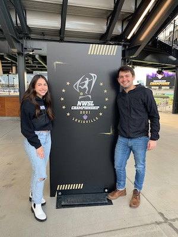

Education:
I am a current fourth-year student at the University of Iowa in the Henry B. Tippie College of Business. I am double majoring in marketing and business analytics and information systems with a minor in communication studies.
Experience:
In the past, I have been able to complete many experiential learning opportunites such as internships, leadership positions, and research. More details about my experiences can be found in the table below.
| Experience Name | Location | Date |
|---|---|---|
| Data, Analytics, and Insights Intern | Strategic America | Summer 2021 - Spring 2022 |
| Marketing Intern | University of Iowa Housing and Dining | Spring 2021-Spring 2022 |
| Communication Consultant | Frank Business Communication Center | Fall 2020-Spring 2022 |
| Marketing Consultant | Henry B. Tippie College of Business Marketing Institute | Spring 2021-Spring 2022 |
| Honors in the Major Research | Henry B. Tippie College of Business | Spring 2021-Spring 2022 |
Future Aspirations:
I hope to work in women's soccer one day in either operations, leadership, marketing, or analytics. Here is a photo of my brother and I at the National Women's Soccer League championship this past fall.
